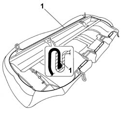
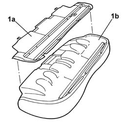

7050A56 Rear seat cushion frame - R.R.
- Path
- Procedures > 70 FITTINGS > 7050 REAR SEATS > 7050A REAR SEAT ASSEMBLY > 7050A56 Rear seat cushion frame - R.R.
- Kind
- repair procedure (removal / refitting; the operation number is the code)
- Applies to
- all engines; all production periods
- Interactive page
- https://sloeber94.github.io/elrnDB-lThss/en/#/197450
Applies to: all engines; all production periods
 Removing
Removing
 Refitting
RefittingSee in Op. 7050A20 Single rear seat cushion - R.R.
-
1. Release the cover along the rear seat cushion perimeter.

Applies to: all engines; all production periods
1. Separate the frame (1a) from the cushion assembly (1b).

Applies to: all engines; all production periods
Refitting
Removing- Fit the frame on the rear seat cushion.
- Fit the surround for the cover along the entire perimeter of the rear seat cushion frame.